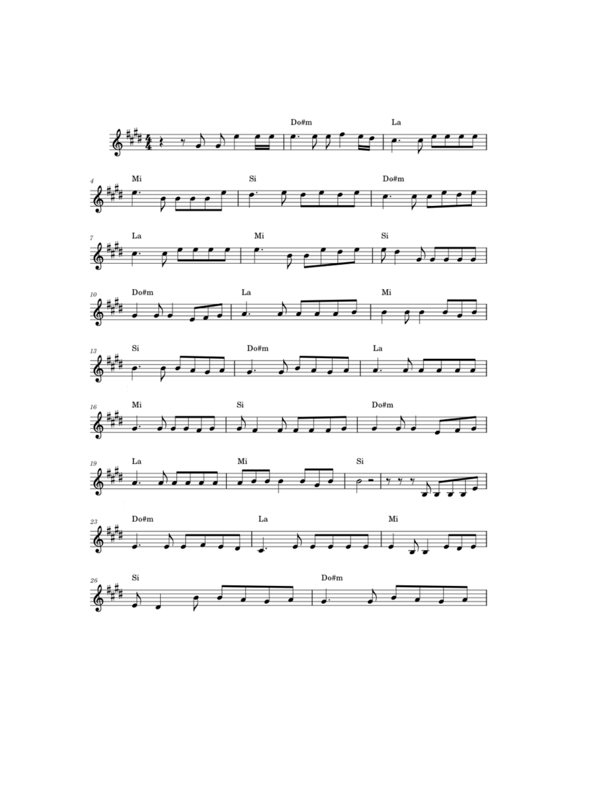

Archives historiques du 20 juillet
Pour accéder au dossier, identifiez le titre de cette partition.

Paul Valéry (1871–1945) est l'un des plus grands poètes et penseurs français du XXᵉ siècle. Né à Sète, il s'est distingué par une poésie raffinée mêlant réflexion philosophique et recherche de la perfection du langage. Parmi ses œuvres les plus célèbres figurent Le Cimetière marin et La Jeune Parque. Élu à l'Académie française en 1925, il demeure une figure majeure de la littérature française.